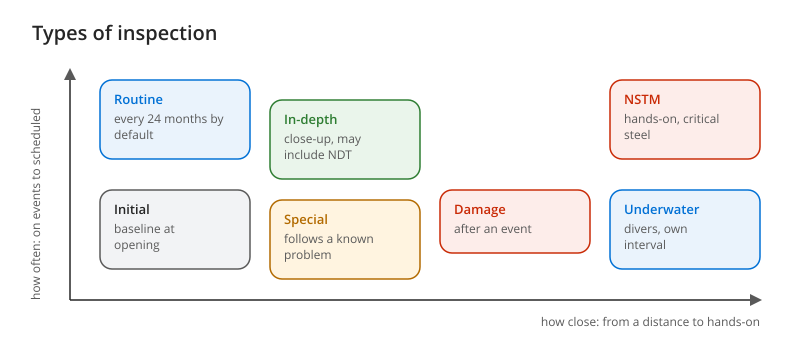

Types of inspection
In one sentence: the type of inspection sets how close the inspector gets, what tools are used and how often it happens.

The types used in bridge practice
The U.S. National Bridge Inspection Standards (NBIS) name these types; building owners often use the same ideas.
- Initial inspection: the first one, when a structure opens or after a major change. It records the baseline: dimensions, materials, condition.
- Routine inspection: the regular inspection, mostly visual from the deck and the ground, with hand tools. For most highway bridges in the U.S., at least every 24 months, with shorter or longer intervals set by risk (see The National Bridge Inspection Standards).
- In-depth inspection: close-up, often hands-on, of some or all members, to find defects a routine inspection can't see. May include NDT.
- Damage inspection: right after an event (vehicle impact, earthquake, fire, flood) to decide whether the structure stays open.
- Special inspection: follows a known problem at set intervals, such as a crack being monitored or scour at a pier.
- Underwater inspection: of the parts below water, by divers or other methods.
- Nonredundant steel tension member (NSTM) inspection: hands-on inspection of steel members in tension whose failure could cause collapse, formerly called fracture-critical members.
- Service inspection: a lighter check between routine inspections when the routine interval is extended beyond 48 months.
Buildings
Building inspections usually follow the purpose: condition assessment before purchase, periodic inspections required by local ordinances (for example balconies and exterior elevated elements, façades, parking structures), and post-event safety evaluations.
PM notes
When you plan an inspection, write down its type and scope first. It tells the team what access, equipment and qualifications to bring.
Common mistakes
- Calling a drive-by look a "routine inspection" in the report.
- Skipping the NSTM members because they are hard to reach.